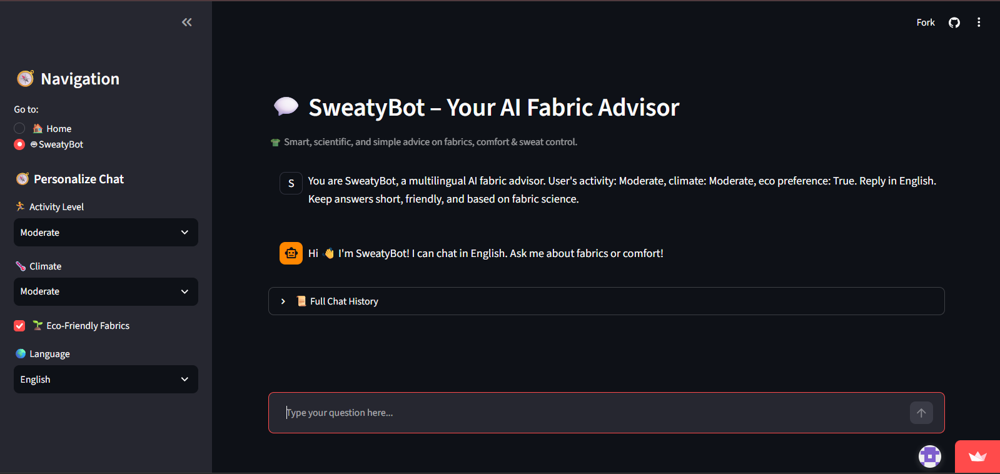

01 / AI · Machine Learning · Data
SweatSmart
AI Fabrics
Interactive AI application for analysing fabric performance and generating fabric recommendations.
02 / Selected Work
Applications, research and websites grounded in practical requirements.

01 / AI · Machine Learning · Data
Interactive AI application for analysing fabric performance and generating fabric recommendations.
02 / Final Year Research
AI-driven framework evaluating fabric performance for sweat management, temperature regulation and comfort. Final Year Project mark: 94%.
03 / E-commerce · Web Development
Launched an e-commerce platform using WordPress and WooCommerce, with hosting, SSL, Cloudflare and SEO configuration.
04 / Business Website · WordPress
Responsive business website designed and developed around client requirements and branding objectives.